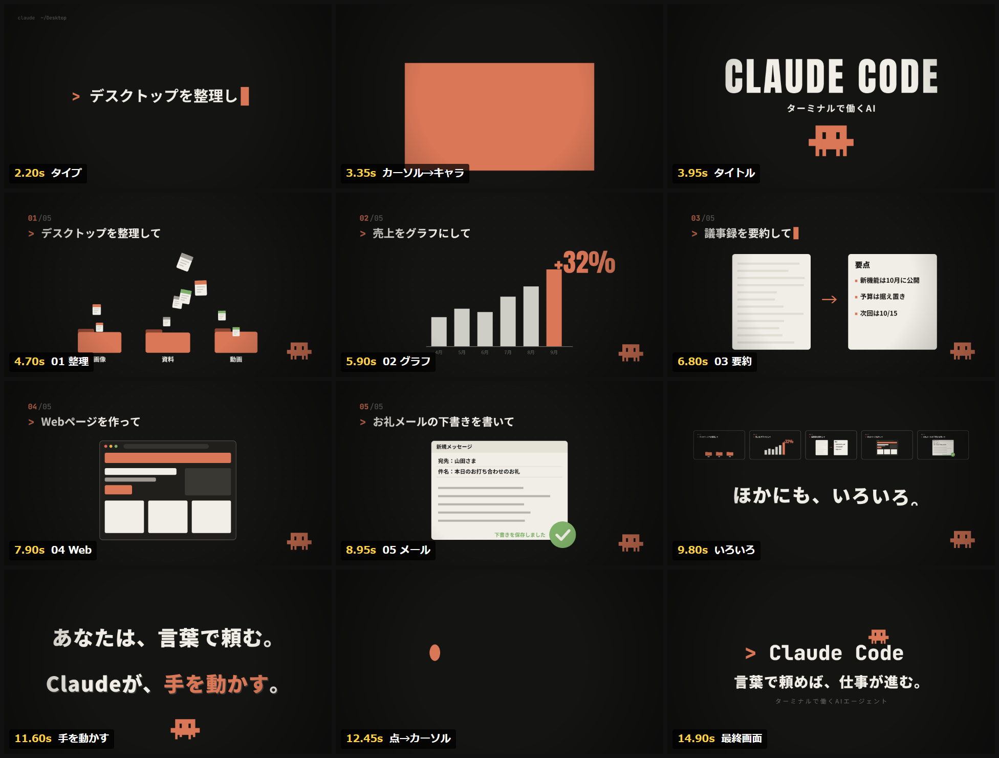

言葉で頼めば、仕事が進む。
主役は、点滅するカーソルひとつ。一文を打ってEnterを押すと、カーソルが広がって小さな相棒に変わり、デスクトップの整理からメールの下書きまで次々に片付けていく。Claude Codeを知らない人に「ターミナルで、言葉で頼むと、AIが手を動かす」を15秒で伝えるためのショーリール。
| 0.0–3.0 | 入力 | 黒い画面に「> デスクトップを整理して」が1文字ずつタイプされ、カメラがゆっくり寄る |
| 3.0–3.5 | 変身 | Enterでカーソルが画面いっぱいに広がり、縮んでドット絵の相棒になる |
| 3.5–4.0 | タイトル | 「CLAUDE CODE」がスラムし、「ターミナルで働くAI」がせり上がる |
| 4.0–9.0 | 5つの頼みごと | デスクトップ整理 → 売上グラフ → 議事録の要約 → Webページ → お礼メールの下書き。1拍ごとにスラッシュワイプで切り替わる |
| 9.0–10.0 | ほかにも | 5つの画面が小窓に縮んで並び、「ほかにも、いろいろ。」 |
| 10.0–12.0 | 言葉 | 「あなたは、言葉で頼む。」「Claudeが、手を動かす。」。相棒が画面の下を走り抜ける |
| 12.0–15.0 | 締め | 文字が点に吸い込まれてカーソルに戻り、「> Claude Code」の上に相棒が飛び乗る |

映像はHTML Canvasで「時刻tのとき画面はこう」という関数として書き、Playwright（Chromium）で120fpsの連番画像を書き出して、ffmpegで60fpsのMP4にまとめました。絵コンテ → 静止画確認 → 書き出しの順で、途中で2回止まって確認しています。ソースは src/ と live.html にあります。制作はClaude Code。